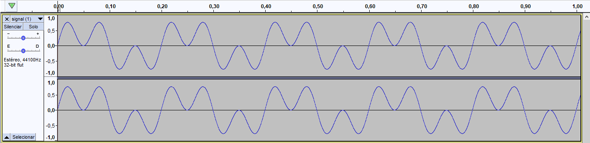

Example created with:
| Duration | 2.0 seconds |
| Equation | 2*sin(10*x)*cos(10*x)^2 |
| Variable | x |
| min x variable value | 0.0 |
| max x variable value | 2π |
| min y variable value | -1.0 |
| max y variable value | 1.0 |
The code is:
var wave = new Wave(); wave.setFilename( 'signal.wav' ); wave.setDuration( '2.0' ); wave.setEquation( '2*sin(10*x)*cos(10*x)^2' ); wave.setMinXVariableValue( 0.0 ); wave.setMaxXVariableValue( 2 * Math.PI ); wave.setMinYVariableValue( -1.0 ); wave.setMaxYVariableValue( 1.0 ); wave.getWaveFile();
The result is
